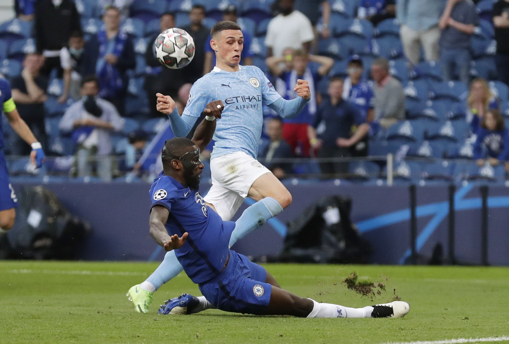
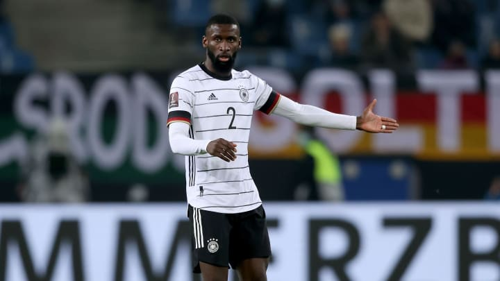

ANTONIO RUDIGER
ANTONIO RUDIGERรูดิเกอร์เป็นคนที่เข้าบอลหนักหน่วง มีความรวดเร็วและเล่นลูกกลางอากาศได้ดี แม้ว่าส่วนใหญ่จะลงเล่นในตำแหน่งเซ็นเตอร์แบ็ค แต่เขาสามารถโยกไปยืนฟูลแบ็คได้ด้วยเช่นกัน
เขาได้ลงเล่นพรีเมียร์ ลีกไปแค่ 2 นัดก่อนขึ้นปีใหม่ อย่างไรก็ตาม เขามีส่วนร่วมมากขึ้นในศึกแชมเปี้ยนส์ ลีก และปรากฎตัว 4 จาก 6 นัด ซึ่งพวกเราจบตำแหน่งแชมป์กลุ่ม E ได้อย่างไม่ยากเย็น
สถานการณ์ของ รูดิเกอร์ เปลี่ยนจากการได้ลงเล่นบางนัด ขึ้นมาเป็นตัวหลักอย่างรวดเร็ว โดยแฟรงค์ แลมพาร์ด เรียกเขามาติดทีมเพื่อช่วยหยุดยั้งผลงานที่ตกลงของสโมสร จากนั้นเจ้าตัวได้ลงเล่นทุกนัด ยกเว้นเกมลีก 4 แมตช์ในยุคของโธมัส ทูเคิ่ล ไปจนจบฤดูกาล
ความรวดเร็ว, การยืนตำแหน่งที่ยอดเยี่ยม และความไม่ย่อท้อของ โทนี่ ถือว่ามีส่วนสำคัญช่วยให้พวกเราเสียแค่ 2 ประตูใน 14 เกมภายใต้ยุคใหม่ของกุนซือชาวเยอรมัน ถึงแม้ว่าหนึ่งในนั้นจะมาจากการทำเข้าประตูตัวเองของเขา ในจังหวะที่ไม่เข้าใจกับเอดูอาร์ เมนดี้
คุณสมบัติทุกอย่างที่ทำให้เขามีความสำคัญต่อสถิติเกมรับอันยอดเยี่ยมของพวกเรา ถูกสรุปให้เห็นจากจังหวะแท็คเคิ่ลอันเยี่ยมยอดในแชมเปี้ยนส์ ลีก รอบชิงชนะเลิศ โดยเขาโผล่มาสกัดลูกยิงช่วงท้ายเกมของ ฟิล โฟเด้น
นอกจากนี้เขายังแสดงความกระหายในการเล่นกับบอล และเติมขึ้นหน้าเพื่อช่วยสร้างจังหวะเกมรุก ซึ่งทำให้เขามีบทบาทสำคัญในอีกฟากฝั่งของสนามเช่นกัน เป็นจังหวะบอลที่ รูดิเกอร์ เปิดขึ้นหน้าซึ่งทำให้ คริสเตียน พูลิซิช หลุดไปยิงประตูทีมเยือนในการแข่งขันรอบรองชนะเลิศแชมเปี้ยนส์ ลีก นัดแรกกับเรอัล มาดริด จากนั้นกองหลังชาวเยอรมัน มายิงประตูเดียวของเขาในฤดูกาลในช่วงเวลาชี้เป็นชี้ตาย ทำให้พวกเราได้ประตูเบิกร่อง เกมที่เปิดสแตมฟอร์ด บริดจ์ เอาชนะเลสเตอร์ ซิตี้ 2-1 ซึ่งมีอิทธิพลส่งให้เดอะ บลูส์ ได้จบอันดับท็อปโฟร์ของพรีเมียร์ ลีก
รูดิเกอร์ ลงสนามอย่างสม่ำเสมอให้กับทีมชาติเยอรมนีในระดับเยาวชน และได้เดบิวต์ให้ชุดใหญ่ในแมตช์กระชับมิตรกับโปแลนด์เมื่อเดือนพฤษภาคม ปี 2014
เดือนพฤศจิกายน 2017 เขาลงเล่นให้เยอรมนีนัดเจออังกฤษที่เวมบลีย์ เป็นเกมกระชับมิตรที่จบลงแบบไร้สกอร์ เขาได้เป็นหนึ่งในทีมเยอรมนีชุดฟุตบอลโลก ปี 2018 และลงเป็นตัวจริงหนึ่งนัดที่ชนะสวีเดน 2-1 ก่อนจะตกรอบแบ่งกลุ่มในรายการนั้น
รูดิเกอร์ เริ่มมีอิทธิพลมากขึ้นเรื่อย ๆ กับทีมชาติเยอรมนีระหว่างปี 2020 โดยเขาได้เป็นตัวจริงทุกนัดที่มีการแข่งขันในปีดังกล่าว หลังจากมีชื่อติดธง "อินทรีเหล็ก" สำหรับศึกยูโร 2020 ที่ถูกเลื่อน เขาลงสนามทุกนาทีให้กับทีมชาติในทัวร์นาเม้นต์นั้น โดยช่วยให้ดี มานชาฟท์ เอาชนะโปรตุเกส 4-2 ในรอบแบ่งกลุ่ม ก่อนพ่ายให้กับอังกฤษในรอบ 16 ทีมสุดท้ายจนต้องตกรอบไป
SOCIAL MEDIA
 |
|